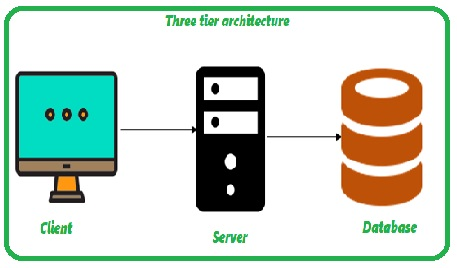

Mapping constraints
- A mapping constraint is a data constraint that expresses the number of entities to which another entity can be related via a relationship set.
- It is most useful in describing the relationship sets that involve more than two entity sets.
- For binary relationship set R on an entity set A and B, there are four possible mapping cardinalities. These are as follows:
- One to one (1:1)
- One to many (1:M)
- Many to one (M:1)
- Many to many (M:M)
One-to-one
In one-to-one mapping, an entity in E1 is associated with at most one entity in E2, and an entity in E2 is associated with at most one entity in E1.
One-to-many
In one-to-many mapping, an entity in E1 is associated with any number of entities in E2, and an entity in E2 is associated with at most one entity in E1.
Many-to-one
In one-to-many mapping, an entity in E1 is associated with at most one entity in E2, and an entity in E2 is associated with any number of entities in E1.

Many-to-many
In many-to-many mapping, an entity in E1 is associated with any number of entities in E2, and an entity in E2 is associated with any number of entities in E1.